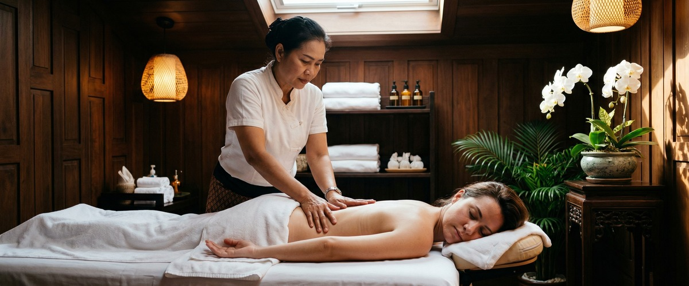
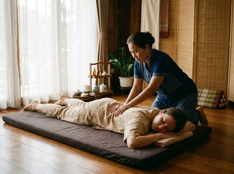

Phuket Thai Massage has built a genuine reputation in Glasgow city centre.

A perfect 5-star rating across 28 reviews, a location one minute from Glasgow Central station, and a welcoming studio atmosphere make it an easy recommendation. If you have come across Phuket Thai Massage while searching for Thai massage in Glasgow, that attention is well earned.
So why are you still looking? For many people it comes down to a few practical sticking points. Phuket Thai Massage does not display pricing on its website, which means you cannot compare costs before you commit. There is no online booking system either: arranging an appointment requires a phone call. For anyone who prefers to book at 10pm on a Tuesday without speaking to anyone, that is a barrier. If any of that sounds familiar, Glasgow Thai Massage is worth a closer look.

Glasgow Thai Massage is a traditional Thai massage studio on West Nile Street in Glasgow city centre. The practice was founded by Maliwan Malone, who trained at Wat Pho Thai Massage School in Bangkok and has over 20 years of hands-on experience. Her daughter Jariya practices alongside her. That combination of formal Wat Pho training and two decades of accumulated skill is not something you will find at every studio in the city. Every session draws on a lineage of technique that goes back to one of the most respected institutions in traditional Thai massage.
The full treatment menu covers traditional Thai massage, Thai oil massage, Thai sports massage, and more, with all pricing displayed on the website so you know what to expect before you book. Appointments are available online, any time of day or night, without a phone call. Book your session online at https://glasgowthaimassage.co.uk/booking-form/
Phuket Thai Massage does not list pricing on its website, and appointments must be arranged by phone. Glasgow Thai Massage publishes its full price list and offers online booking through its website at any hour. If pricing transparency and the ability to self-serve your booking matter to you, that is a straightforward difference. Phuket Thai Massage also notes an early bird discount for morning sessions booked a day in advance, which is a practical perk for flexible clients. Glasgow Thai Massage does not currently offer that kind of time-based discount structure.
Where Phuket Thai Massage leads is in its review volume relative to how recently it appears to have opened, and in its proximity to Glasgow Central station, which makes it genuinely convenient for anyone travelling in by train from the south side or further afield. Glasgow Thai Massage is a short walk from Buchanan Street subway station, which serves a different part of the city well. If you work or live closer to the Buchanan Street end of the city centre, the journey to Glasgow Thai Massage will be the easier one.
Glasgow Thai Massage suits people who want traditional Thai technique delivered by practitioners with verifiable formal training, not a generalised wellness experience. It is a strong fit for office workers based around West Nile Street, Blythswood Square, and the northern part of the city centre grid, for athletes who need structured sports massage and recovery work, and for anyone who wants to book and pay online without navigating a phone call. If you are building massage into a regular routine rather than treating it as a one-off occasion, the consistency of a two-practitioner family studio with a stable approach and 20 years of practice behind it is a meaningful advantage.
Phuket Thai Massage sits in Waterloo Chambers on Waterloo Street, a short walk from Glasgow Central station. To reach Glasgow Thai Massage from there, head north on Hope Street, cross Sauchiehall Street, and continue up to Renfrew Street. Turn right onto Renfrew Street, then left onto West Nile Street. Victoria Chambers is at 142 West Nile Street, on your right. The walk takes around 10 to 12 minutes and stays on well-lit, straightforward streets throughout. Alternatively, Buchanan Street subway station is a two-minute walk from the studio if you prefer to take the subway from anywhere on the Clockwork Orange line.
Get driving directions to Glasgow Thai Massage:
Glasgow Thai Massage — Floor 3 Suite 4, Victoria Chambers, 142 West Nile Street, Glasgow G1 2RQ
Book online now at https://glasgowthaimassage.co.uk/booking-form/ — no phone call needed, no waiting for a callback, just choose your treatment and time.
Yes. Glasgow Thai Massage has a full online booking system available through its website at https://glasgowthaimassage.co.uk/booking-form/ You can browse treatments, select a time, and confirm your appointment without making a phone call. Phuket Thai Massage, by contrast, requires you to call to arrange an appointment.
Glasgow Thai Massage was founded by Maliwan Malone, who trained at Wat Pho Thai Massage School in Bangkok, one of the most respected institutions for traditional Thai massage. She has over 20 years of practice experience. Phuket Thai Massage does not publish information about therapist qualifications or training backgrounds on its website, so a direct comparison on that basis is not possible from publicly available information.
Glasgow Thai Massage is at Floor 3, Suite 4, Victoria Chambers, 142 West Nile Street, Glasgow G1 2RQ. It is a short walk from Buchanan Street subway station and within easy reach of most city centre offices. Phuket Thai Massage is located in Waterloo Chambers on Waterloo Street, closer to Glasgow Central station.
Glasgow Thai Massage offers traditional Thai massage, Thai oil massage, Thai sports massage, Thai aromatherapy massage, Thai head massage, Thai foot massage, Thai facial massage, and Thai stone massage. Phuket Thai Massage lists Thai massage, oil massage, foot massage, and deep tissue massage as its core services.
Yes. All treatment prices are listed on the Glasgow Thai Massage website so you can see the full cost before you book. Phuket Thai Massage does not publish pricing on its website, which means you would need to call to find out what each treatment costs.
Glasgow Thai Massage holds a 4.7-star rating drawn from 57 Google reviews. Those reviews reflect the experiences of paying clients who have visited the studio and left feedback through Google. The rating reflects consistently strong client satisfaction across a meaningful number of sessions.
Ready to book a session with a practitioner trained at Wat Pho with over 20 years of experience? Book your appointment online at https://glasgowthaimassage.co.uk/booking-form/